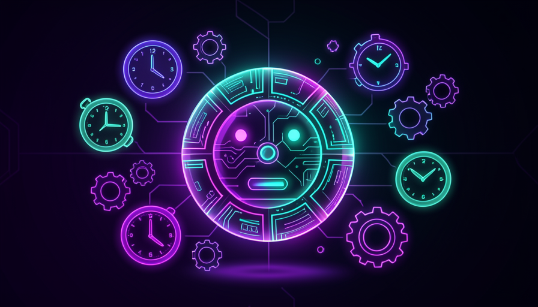

💡 New here? Three words before you start
- Trigger — what gets Jarvis acting on its own: a schedule, an event, or a command from you.
- Schedule — scheduling a task to run at a set time (like an alarm clock, but one that does the work).
- Proactive — when the assistant acts without you asking, because you agreed on that beforehand.
⚡ Triggers: time, event, command
Until now, your Jarvis only did anything when you talked to it. A trigger changes this: it’s the “cue” that gets the assistant to start working on its own. There are three types, and basically all automations come from one of them.
Think of a doorman. They open the gate when the time comes to let go of the junk (time), when someone rings the doorbell (event) or when you turn it on and ask (command). Same idea.
🔑 The three triggers
- ⏰Time: "every morning at 7 a.m.," "every Friday," "every hour." The clock is the trigger.
- 📩Event: "when an email from my boss arrives," "when the price drops." Something happens and triggers it.
- 💬Command: "when I send /resumo on Telegram." You pull the trigger whenever you want.
Key concepts
⏰ Schedule tasks: proactive Jarvis
The time trigger is the easiest place to start—and the one that transforms your routine the most. Schedule it’s telling Jarvis, “do this at this time every day.” From then on, it starts up on its own, does the task, and gives you the result, even if you’re asleep or in traffic.
The classic example is the morning summary: at 7 a.m., Jarvis reads your sources (news, calendar, emails) and sends you a short briefing. You wake up with the day already laid out for you.
🧪 Copy and use: your first scheduled routine
Goal: schedule an automatic summary that arrives every morning. Paste the text below into your Jarvis scheduling tool (or ask Claude to set up the routine), replacing the sections between < >.
AGENDAR: todo dia às <7h>, no fuso <America/Sao_Paulo>. TAREFA: resuma estas fontes pra mim em até 10 linhas: - <link do jornal ou newsletter que eu sigo> - minha agenda de <hoje> - e-mails marcados como importantes desde ontem REGRAS: - Comece pelo mais urgente. - Se nada importante, escreva "dia tranquilo, nada urgente". - Me mande por <Telegram>.
How to verify: wait for the scheduled time (or ask "run it now to test"). It worked if a short message arrives in the right channel without you having to do anything. If it’s too long, adjust "up to 10 lines".
💡 Practical tip
Start with one just one routine, at one time. It’s tempting to schedule ten things right away—but you need to trust that the first one works before piling on more. One good routine is worth more than ten messy ones.
Key concepts
💬 Connect to messaging: Telegram and email
What good is having Jarvis work overnight if the result is stuck on the computer? Connecting it to a messaging app solves this: it alerts you where you already look all day. The Telegram it’s the favorite — it’s free, easy to plug in, and works like a regular chat.
And it’s not one-way: through the same channel you sends commands. Type "/resumo" and it responds; say "postpone my meeting" and it takes care of it. Your phone becomes the remote control for your assistant.
✓ Good channels to start with
- ✓Telegram: fast, free, easy to connect
- ✓Email: good for long summaries and archiving
- ✓A channel you already open every day
✗ What to avoid at first
- ✗Spread notifications across 5 different apps
- ✗Channel you rarely open
- ✗Send everything through every channel (it becomes spam)
💡 Practical tip
Choose one main channel and stick with it. Everything in one place is easy to keep track of; spread out, you miss notifications. Telegram for everyday use, email only for what you need to keep — it's a division that works well.
Key concepts
🌙 Routines that run without you
The magic happens when the work gets done while you sleep. Boring, time-consuming tasks—scanning the news, organizing files, preparing a draft—run overnight, when nobody wants to work. You wake up and everything is ready.
It's the turning point of module 1.1 taken to the extreme: you stopped being the one who does and became who gets it ready-made. Your time stays productive even when you’re not at the computer.

📊 To put it in perspective
- •A task that takes ~30 min per day becomes ~10 hours saved per month.
- •Running overnight, it takes up 0 minute of your workday.
- •Three routines like these and you gain practically a week of work per month.
Translation: automating repetitive tasks isn’t a luxury for technical people — it’s what frees you up to do what only you can do.
Key concepts
👀 Monitor without losing control
Without visibility, autonomy turns into anxiety. If Jarvis acts on its own, you need a way to look over someone’s shoulder of its own: a record of what it did, and a heads-up when something goes off course. Autonomy with eyes open, not in the dark.
The golden rule: start by asking it to ask permission for actions that affect the real world (sending email, spending money, deleting things). Once you gain confidence, loosen the reins little by little.
✓ Stay in control
- ✓Ask for a log: "tell me what you did"
- ✓Alert you when something goes wrong
- ✓Ask permission for risky actions
- ✓Loosen the reins gradually
✗ Losing control
- ✗Give full autonomy on day 1
- ✗Never look at what it did
- ✗Let it send emails / make payments without warning
- ✗Discover the error only after it’s already blown up
💡 Practical tip
Ask Jarvis for a summary of what it did once a day. It’s your “statement”: a 30-second glance that keeps you in control without having to monitor anything all the time.
Key concepts
💡 Automations worth building
So you don’t get stuck on “what should I automate?”, here’s a starter list. The rule is simple: automate what is repetitive, tedious, and predictable. Keep the things that require judgment for yourself.
✋ Before you continue — which of these tasks is the best candidate for automation?
🎓 Module summary
Next module:
3.6 — 🎬 Your Jarvis in action: bring it all together — build it, give it memory, plug in skills, and put the assistant to work for real.